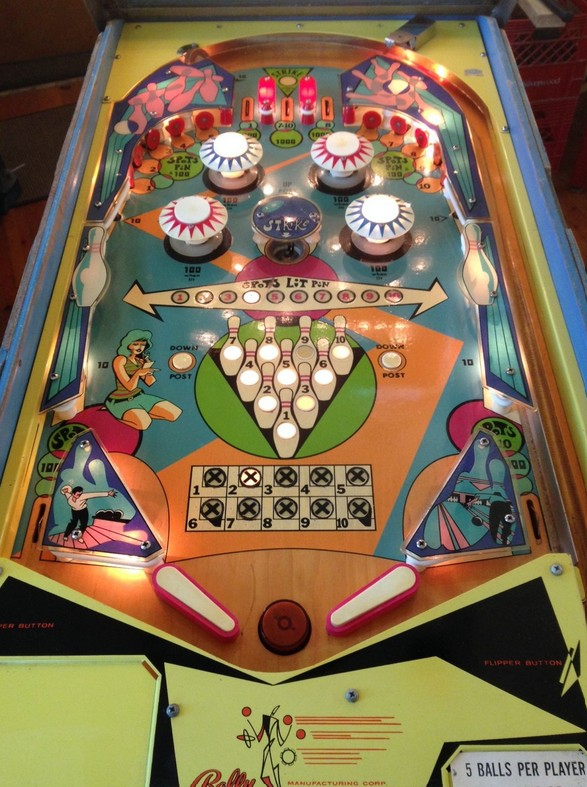

Bowling a Strike scores 5,000 points. A free game can be given for reaching a certain threshold of Strikes, default 5. Earning a Strike can happen in one of three ways.
Pins can be earned through the following methods:
Pop bumpers score 10 points or 100 when lit. Either the red or blue bumpers will be lit at any one time; never neither colour, and never both. Which bumpers are lit alternates at the start of each ball and whenever any Strike is scored.
The center post, which completely blocks the center drain when it is active (and the flippers are lowered), is raised by pressing the rollover button in the center of the pop bumper nest, and lowered by pressing the Down Post rollover buttons near the slingshots. It may be possible for the ball to drain underneath a raised flipper even while the center post is up.
There are no in lanes. Flippers back up directly to the slingshots, which score 10 points. Out lanes score 1,000 points and spot the #1 (left) or #10 (right) pin. There is no kickback or free ball gate. There also is no end of ball bonus or extra ball feature. Tilt ends the ball in play only.
The below picture of Bowl-O's playfield was taken from the Internet Pinball Database, where it was originally provided by Bruce Brigham.
